O Orçamento Familiar 2027 é um arquivo que abre no navegador. Você lança as rendas, as contas com vencimento e as caixinhas, e o painel mostra o ano inteiro. Sem cadastro, sem internet e sem mensalidade.
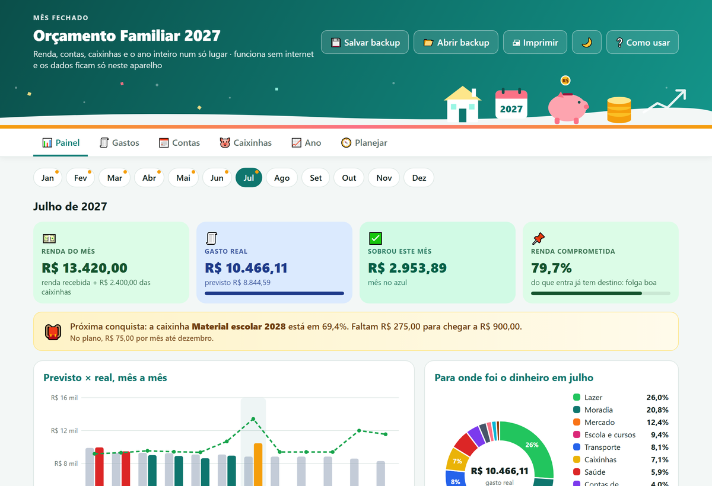
O mês comum a gente conhece. O que pesa é o que vem junto: IPVA, licenciamento, IPTU, matrícula e lista de material escolar caem quase na mesma semana, logo depois das festas. Se esses valores não estão no papel, o aluguel, o mercado e as contas de luz pagam a diferença.
Parcela de IPVA, carnê de IPTU e matrícula entram no mês sem aparecer no controle do dia a dia.
Sem um destino marcado, o dinheiro das duas parcelas se mistura com o resto e acaba antes de março.
"Ano que vem eu me organizo" só vira plano quando cada mês tem renda, conta e valor guardado.
Um arquivo único, em português, com valores em reais e datas DD/MM/AAAA. Cabem nele os 12 meses de 2027, divididos em seis telas:
Renda do mês, gasto real contra o previsto, quanto sobrou e a renda comprometida, mais gráficos de barras e de rosca.
Lance o mercado, o combustível e a farmácia em alguns segundos, com categoria e filtro.
Fixas, parceladas ou de um mês só, com dia de vencimento, calendário e marcação de paga.
Meta, saldo e quanto guardar por mês para IPVA, IPTU, material escolar, férias e Natal.
Renda, gasto previsto, gasto real e sobra dos 12 meses, com exportação em CSV.
Rendas da casa (inclusive 13º e 1/3 de férias) e o limite mensal de cada categoria.
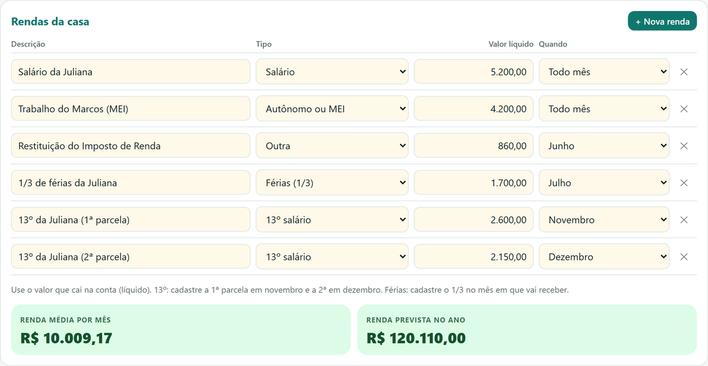
O botão "Contas do começo de ano" sugere IPVA, licenciamento, IPTU, matrícula e material escolar. Você digita o valor, o dia e as parcelas, e cada conta cai no mês certo do calendário. As datas e os descontos mudam por estado e por cidade, então confira os seus.
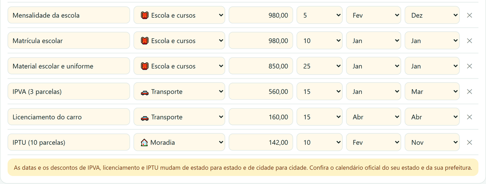
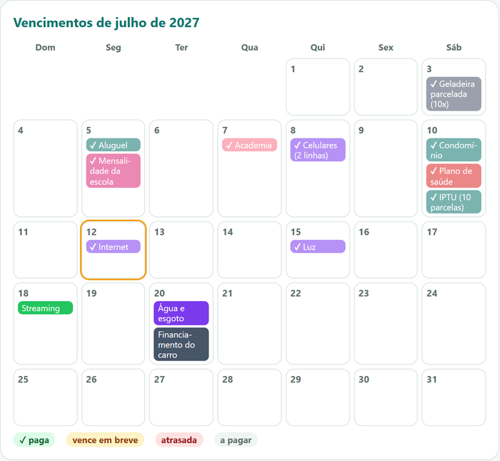
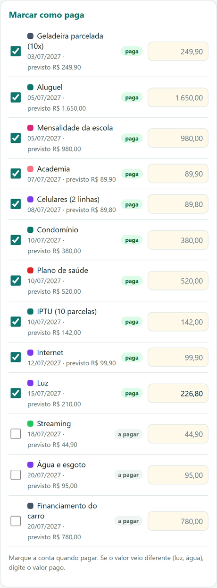
Escolha a meta, diga o mês em que vai precisar do dinheiro e o app calcula o depósito mensal. Cada caixinha mostra o que já foi guardado, quanto falta e quando a meta é batida. Não há juros nem rendimento: é só organização.
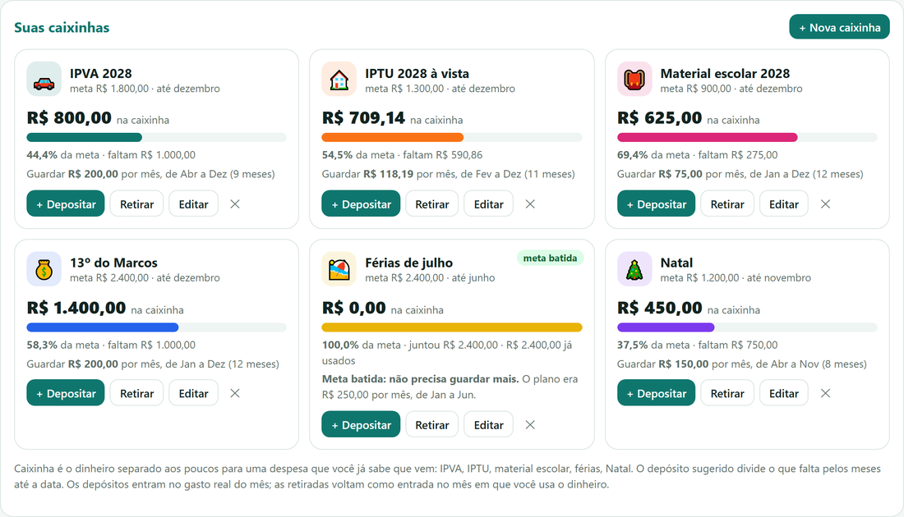
Na aba Ano, três gráficos mostram a renda, o gasto previsto e o gasto real de janeiro a dezembro, o gasto por categoria e a sobra de cada mês com o total acumulado. O painel do mês compara o previsto com o real.
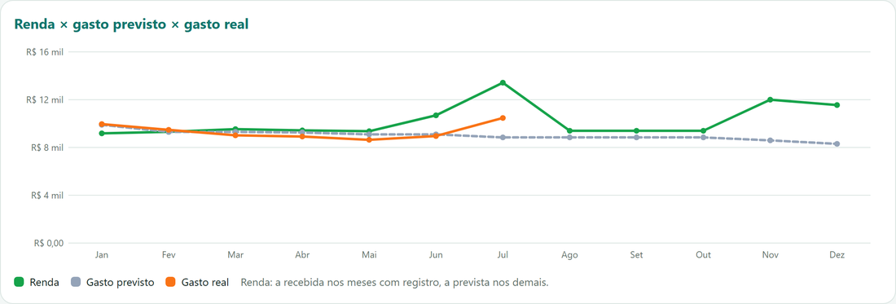
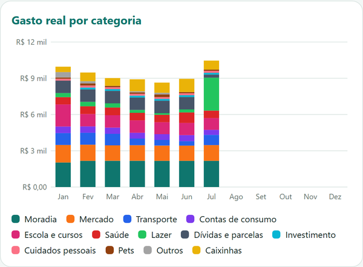
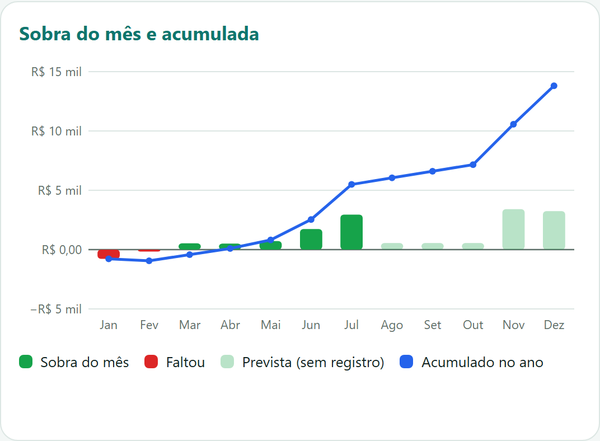
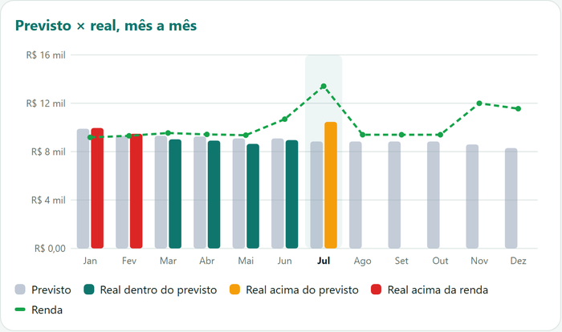
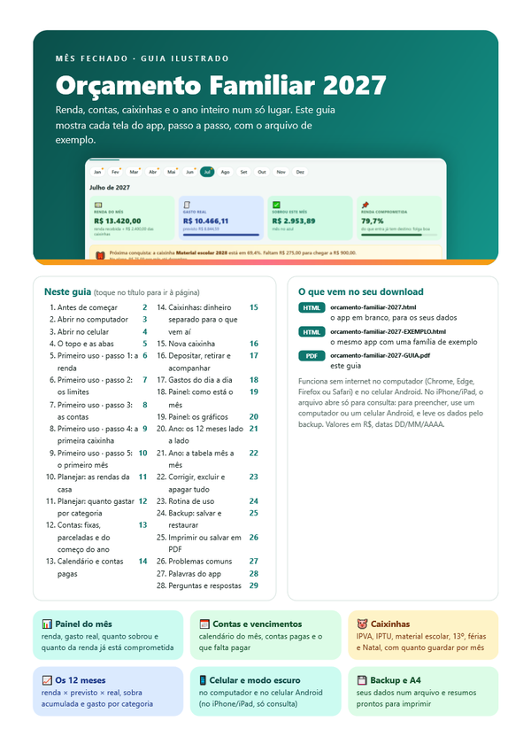
Assim que o pagamento é confirmado, você baixa os três arquivos pela área do comprador na Kiwify. Eles também seguem por e-mail.
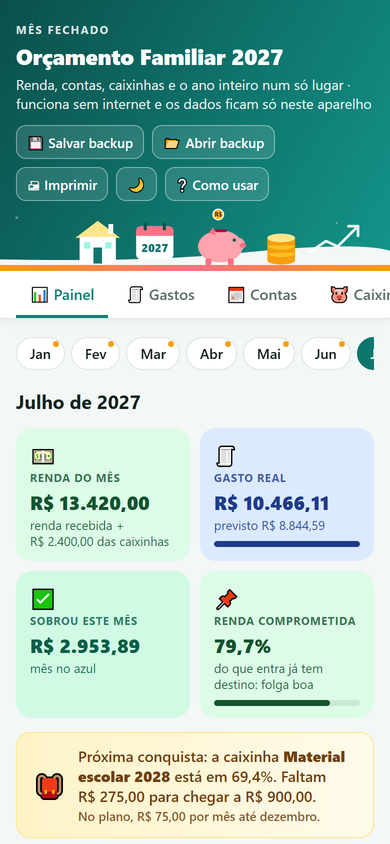
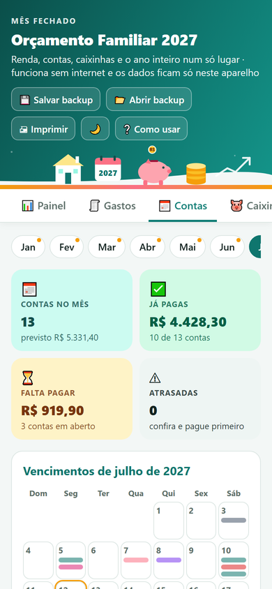
Funciona no navegador do computador e do celular Android. No iPhone/iPad, o arquivo abre só para consulta: para preencher, use um computador ou um celular Android, e leve os dados pelo backup.
Pagamento único, sem mensalidade.
Pix ou cartão.
Baixou, abriu o EXEMPLO e viu que não era o que procurava? Peça o reembolso em até 7 dias, pela Kiwify ou por e-mail, e o valor volta para você.
Ferramenta de organização. Os valores são estimativas feitas com os números que você informa, sem recomendação financeira e sem promessa de resultado. Datas e descontos de IPVA e IPTU variam por estado e município.
Três: o app em branco (orcamento-familiar-2027.html), uma cópia já preenchida com uma família fictícia, de janeiro a julho (orcamento-familiar-2027-EXEMPLO.html), e o guia em PDF, com 29 páginas e prints numerados. Você baixa tudo pela área do comprador na Kiwify e também por e-mail.
Dá. O arquivo EXEMPLO traz rendas, contas, gastos e caixinhas já lançados. Abra, mude de mês, clique nas abas e veja cada gráfico. Ele guarda os dados num espaço separado, então não mistura com o seu app em branco.
Não. É um arquivo que abre no navegador e funciona sem internet, sem cadastro e sem Excel. A internet só é necessária para baixar os arquivos.
No navegador do computador e do celular Android. No iPhone/iPad, o arquivo abre só para consulta: para preencher, use um computador ou um celular Android, e leve os dados pelo backup. O guia mostra o passo a passo.
Ficam só no navegador do seu aparelho; nada é enviado pela internet. Como limpar os dados do navegador apaga o que está salvo, use o botão "Salvar backup" uma vez por mês e guarde o arquivo. Para recuperar ou levar para outro aparelho, use "Abrir backup".
Não. O botão "Contas do começo de ano" sugere a lista (IPVA, licenciamento, IPTU, matrícula e material escolar), e você digita o valor, o dia e as parcelas do seu carnê. Datas e descontos mudam de estado para estado e de cidade para cidade, então confira o calendário oficial do seu.
Caixinha é o dinheiro separado aos poucos para uma conta que você já sabe que vem, como IPVA, IPTU, material escolar, férias ou Natal. Você informa a meta, quanto já tem e o mês em que vai precisar, e o app divide o que falta pelos meses restantes. Não há juros nem rendimento: ele só organiza o que você separa.
Em Planejar, na lista de rendas, escolha o tipo "13º salário" ou "Férias (1/3)" e marque o mês em que o dinheiro cai. O 13º entra em duas parcelas: uma em novembro e outra em dezembro. Para um valor que cai todo mês, deixe "Todo mês".
É a parte da renda do mês que já tem destino: o gasto previsto dividido pela renda prevista. O cartão fica verde até 80%, amarelo até 100% e vermelho acima disso. Serve como um sinal para você olhar o mês com atenção, e não como recomendação.
Não. Você digita os valores, e isso é de propósito: nada sai do seu aparelho. Cada gasto leva alguns segundos para lançar, e as contas fixas só precisam ser cadastradas uma vez.
Dá. O app imprime em A4 o resumo do mês, o resumo do ano e as caixinhas, ou salva em PDF. Na aba Ano, o botão "Exportar CSV" gera um arquivo com ponto e vírgula e vírgula decimal, que o Excel e o Google Planilhas abrem direto.
Este app é feito para 2027 e tem os 12 meses desse ano. O pagamento é único, de R$ 37,00, sem mensalidade. Se não for o que você esperava, peça o reembolso em até 7 dias pela Kiwify ou pelo e-mail contatoplanejahome@gmail.com.